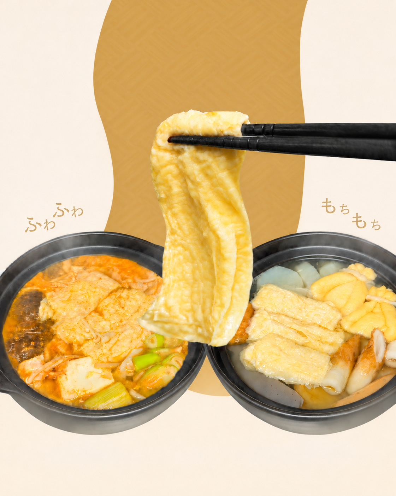
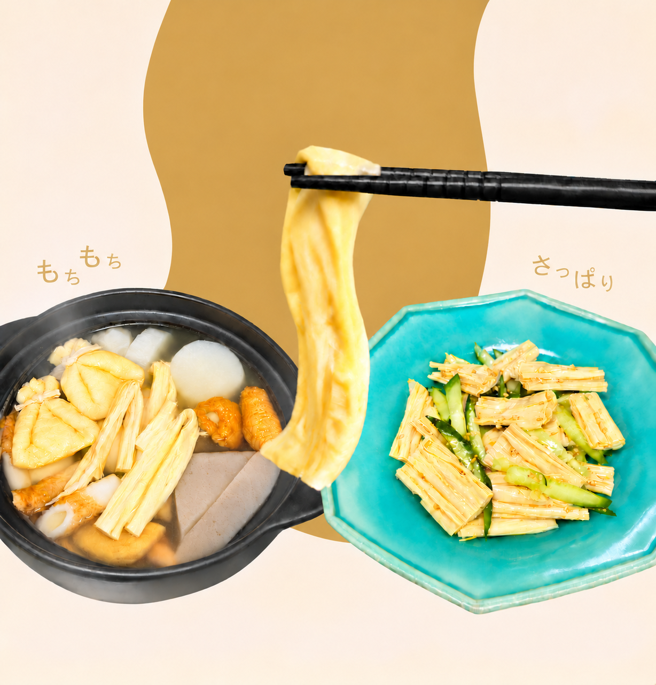
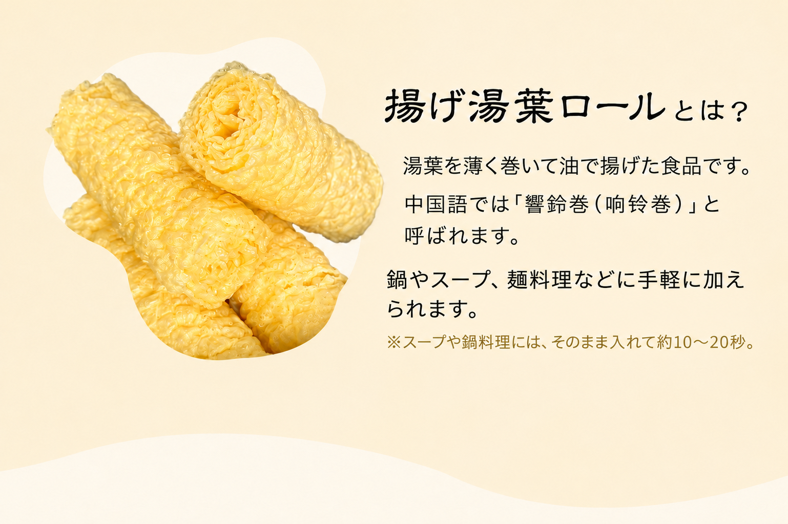
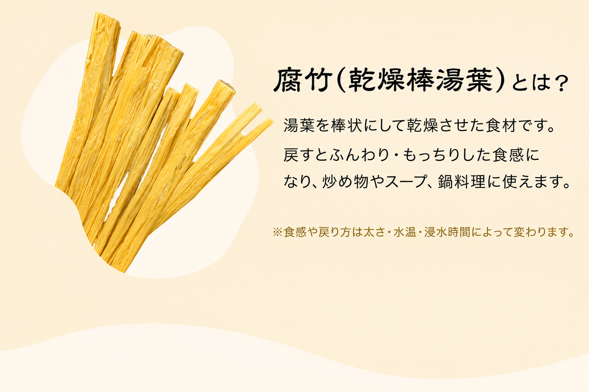
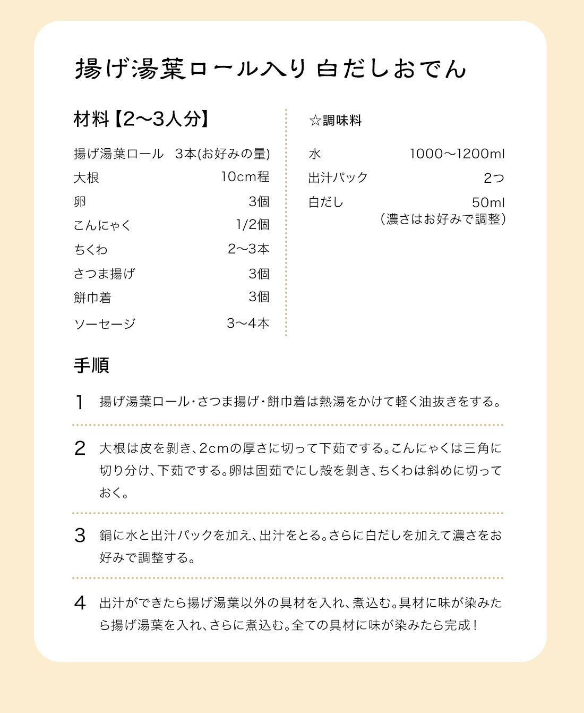
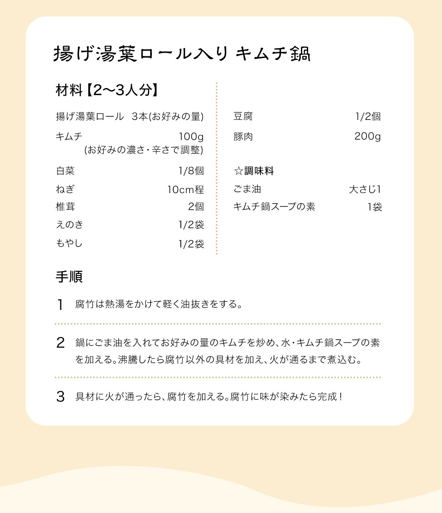
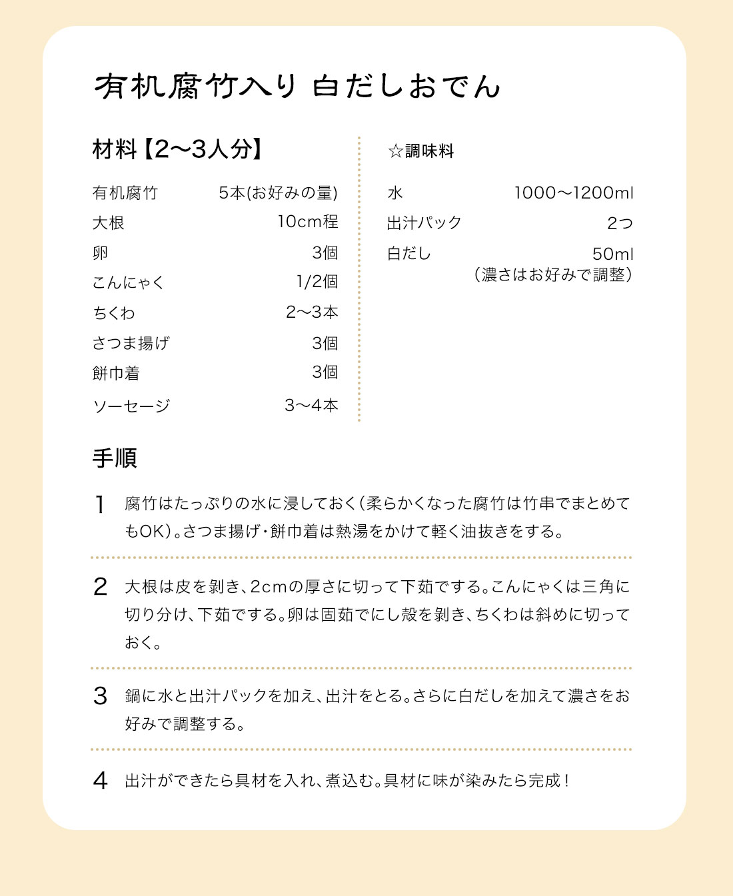
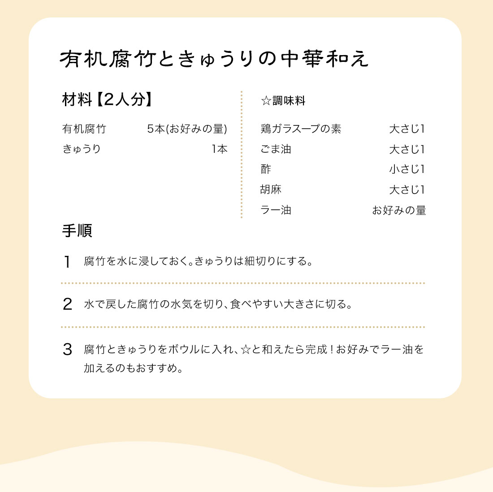

DOU HUANG JIN × FJS
豆黄金
豆のおいしさを、
毎日の食卓へ。
有機揚げ湯葉ロールと有機腐竹（乾燥棒湯葉）。
いつものお料理に、新しいおいしさを。
基本の使い方と、4つの動画レシピをご紹介します。
動画レシピを見る↓

豆黄金揚げ湯葉ロール

豆黄金腐竹（乾燥棒湯葉）
豆黄金 有機揚げ湯葉ロール
- 内容量
- 120g
- アレルゲン
- 大豆
- 保存方法
- 直射日光・高温多湿を避けて保存してください。
豆黄金 有機腐竹（乾燥棒湯葉）
- 内容量
- 108g
- アレルゲン
- 大豆
- 保存方法
- 直射日光・高温多湿を避けて保存してください。
実際の製品表示（パッケージ表示）を優先してください。
ABOUT DOU HUANG JIN
豆乳から生まれた、2つのおいしさ。
豆黄金の有機揚げ湯葉ロールと有機腐竹（乾燥棒湯葉）は、どちらも豆乳からできる湯葉がもとになっています。揚げ湯葉ロールは湯葉を巻いて揚げ、腐竹は湯葉を棒状にして乾燥させたものです。それぞれの食感を、鍋やスープなどでお楽しみいただけます。

01 / ORGANIC FRIED YUBA ROLLS
有機揚げ湯葉ロール
だしを含んだ揚げ湯葉ロールのやわらかな食感を、白だしおでんやキムチ鍋で。やさしいだし味とピリ辛の味わい、気分に合わせてお試しください。
この商品のレシピへ ↗
02 / ORGANIC FUZHU STICKS
有機腐竹（乾燥棒湯葉）
もっちりとした有機腐竹（乾燥棒湯葉）を、白だしおでんやきゅうりの中華和えで。だしが染みた温かい一品と、さっぱりした冷たい一品をお試しください。
この商品のレシピへ ↗ 有機揚げ湯葉ロール
- 01
スープ・鍋料理
そのまま入れて約10〜20秒。
- 02
麺
スープに加えるだけで簡単アレンジ。
- 03
和えもの
軽く湯通しして、さまざまな料理に。
有機揚げ湯葉ロールのパッケージ裏面を見る
有機腐竹（乾燥棒湯葉）
- 01
水に浸す
たっぷりの水（またはぬるま湯）に浸し、やわらかくなるまで待ちます。
- 02
水気を切る
ザルにあげて水気を切り、必要に応じて食べやすい大きさにカットします。
- 03
加熱して仕上げる
炒める・煮る・鍋に入れるなど、火を通してお召し上がりください。
戻り方は太さ・水温・浸水時間によって変わります。商品のパッケージに記載された調理方法を優先してください。
有機腐竹の使い方ガイドを見る（日本語）
RECIPE COLLECTION
動画でわかる、4つのおいしさ。
動画と材料・手順を見ながら、豆黄金を食卓に。
Original videos and downloadable recipe sheets are in Japanese. Ingredients and cooking steps below are available in English.
有機揚げ湯葉ロール
白だしおでん
2〜3人分
材料
- 有機揚げ湯葉ロール
- 3本（お好みの量）
- 大根
- 10cm程
- 卵
- 3個
- こんにゃく
- 1/2個
- ちくわ
- 2〜3本
- さつま揚げ
- 3個
- 餅巾着
- 3個
- ソーセージ
- 3〜4本
- 水
- 1000〜1200ml
- 出汁パック
- 2つ
- 白だし
- 50ml（濃さはお好みで調整）
作り方
- 有機揚げ湯葉ロール・さつま揚げ・餅巾着は熱湯をかけて軽く油抜きをする。
- 大根は皮を剥き、2cmの厚さに切って下茹でする。こんにゃくは三角に切り分け、下茹でする。卵は固茹でにし殻を剥き、ちくわは斜めに切っておく。
- 鍋に水と出汁パックを加え、出汁をとる。さらに白だしを加えて濃さをお好みで調整する。
- 出汁ができたら揚げ湯葉以外の具材を入れ、煮込む。具材に味が染みたら揚げ湯葉を入れ、さらに煮込む。全ての具材に味が染みたら完成！
元のレシピシートを見る

有機揚げ湯葉ロール
キムチ鍋
2〜3人分
材料
- 有機揚げ湯葉ロール
- 3本（お好みの量）
- キムチ
- 100g（お好みの濃さ・辛さで調整）
- 白菜
- 1/8個
- ねぎ
- 10cm程
- 椎茸
- 2個
- えのき
- 1/2袋
- もやし
- 1/2袋
- 豆腐
- 1/2個
- 豚肉
- 200g
- ごま油
- 大さじ1
- キムチ鍋スープの素
- 1袋
作り方
- 揚げ湯葉ロールは熱湯をかけて軽く油抜きをする。
- 鍋にごま油を入れてお好みの量のキムチを炒め、水・キムチ鍋スープの素を加える。沸騰したら揚げ湯葉ロール以外の具材を加え、火が通るまで煮込む。
- 具材に火が通ったら、揚げ湯葉ロールを加える。揚げ湯葉ロールに味が染みたら完成！
元のレシピシートを見る

有機腐竹（乾燥棒湯葉）
白だしおでん
2〜3人分
材料
- 有機腐竹
- 5本（お好みの量）
- 大根
- 10cm程
- 卵
- 3個
- こんにゃく
- 1/2個
- ちくわ
- 2〜3本
- さつま揚げ
- 3個
- 餅巾着
- 3個
- ソーセージ
- 3〜4本
- 水
- 1000〜1200ml
- 出汁パック
- 2つ
- 白だし
- 50ml（濃さはお好みで調整）
作り方
- 腐竹はたっぷりの水に浸しておく（柔らかくなった腐竹は竹串でまとめてもOK）。さつま揚げ・餅巾着は熱湯をかけて軽く油抜きをする。
- 大根は皮を剥き、2cmの厚さに切って下茹でする。こんにゃくは三角に切り分け、下茹でする。卵は固茹でにし殻を剥き、ちくわは斜めに切っておく。
- 鍋に水と出汁パックを加え、出汁をとる。さらに白だしを加えて濃さをお好みで調整する。
- 出汁ができたら具材を入れ、煮込む。具材に味が染みたら完成！
元のレシピシートを見る

有機腐竹（乾燥棒湯葉）
きゅうりの中華和え
2人分
材料
- 有機腐竹
- 5本（お好みの量）
- きゅうり
- 1本
- 鶏ガラスープの素
- 大さじ1
- ごま油
- 大さじ1
- 酢
- 小さじ1
- 胡麻
- 大さじ1
- ラー油
- お好みの量
作り方
- 腐竹を水に浸しておく。きゅうりは細切りにする。
- 水で戻した腐竹の水気を切り、食べやすい大きさに切る。
- 腐竹ときゅうりをボウルに入れ、調味料と和えたら完成！お好みでラー油を加えるのもおすすめ。
元のレシピシートを見る
